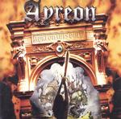

| Artist: | Ayreon |
| Title: | Ayreonauts Only |
| Label: | Transmission Records TM-027 |
| Length(s): | 62 minutes |
| Year(s) of release: | 2000 |
| Month of review: | [02/2001] |
| 1) | Into The Black Hole | 10.46 |
| 2) | Out Of The White Hole | 7.12 |
| 4) | Carpe Diem (chaos) | 4.15 |
| 5) | Temple Of The Cat | 3.07 |
| 7) | Beyond The Last Horizon | 5.34 |
| 9) | Eyes Of Time | 5.10 |
| 10) | Nature's Dance | 2.33 |
| 11) | Ambeon: Cold Metal | 7.10 |
Out Of The White Hole now has the vocals of Robert Soeterbroek. The vocals of Soeterbroek sound like typical hard rock vocals. The bombastic and melodic choruses on this track contrast strongly with Norlanders meandering spacey keyboards. Of course, the music on these tracks is quite the same as the version as those on the original records. The rhythm section is driving on the second part of the track, Planet Y, where we meet the creature Forever. Optimistic melodies continue the track in the third part, which is an uplifting piece, in which Norlander again plays an estranging role with his keyboards.
Through The Wormhole is an up-tempo piece with Ian Parry doing the lead instead of Fabio Lione. The whispered vocals in this staccato track later turn to more typical hard rock vocals. In a way this is very poppy track, but the driving rhythm makes it a very distinctive one.
The final track from the Flight Of The Migrator is Carpe Diem, which later became known under the name Chaos. The track was meant to be one for a band called Planet 9, but since that never materialized, Arjen used it for the metal record. The up-tempo, classically inspired instrumental, sounds a bit flatter than we are used to, but this is not surprising, because it is a home demo. The quality is good enough for me, the music I do not care for very much. The energy is there, but it lacks distinction.
Astrid van der Veer who will also sing on the Ambeon project does a willowy sounding Temple Of The Cat. Her voice is more flexible it seems, and the song has a moodier sheen lying over it now. The song is acoustic and therefore the vocals are more highlighted. A light footed alternative to the album version.
Based on three tracks from Into The Electric Castle, on Hippie's Amazing Trip we hear Mouse (also present on The Dream Sequencer) sing the part of the hippy. It took Arjen himself to point out the likeness of Mouse's voice to that of John Lennon, and I wonder now how I could have missed it. It is not just Mouse here, because Anneke van Giersbergen sings in her clear way as well in the chorus. The third part I like most, where Mouse sings with Reekers and the piano of Robby Valentine has control. Fish is not listed among the singers on this track, but he can sure be heard.
Beyond The Last Horizon takes us back a bit further to the not so successful Actual Fantasy. With quite a few Beatles influences, the music becomes typically Ayreon with accessible, singalong choruses, but also some heavy guitar work.
We are already back to The Final Experiment, which started it all. The Charm Of The Seer is present as a home demo with Arjen doing everything. The song sounds like chamber music, with lots of strings and harpsichords. The vocals of Arjen has some aspects of Peter Hammill on this track. Later on the music becomes more up-beat and waltz like. I like it less than.
Eyes Of Time is sung by Leon Goewie. Like the next track Nature's Dance is could be found on the Sail Away To Avalon single. Goewie has a rather harsh voice and sings in a bit rather tiring way. I agree with Arjen that this would have been too much too soon on the Final Experiment. The keyboard solos and pounding drums on this track are particularly nice. Nature's Dance is a home demo without the warping of Arjen's vocals.
The final track is a taster for the new project called Ambeon, which combines Ayreon with Ambient. Dark, brooding the music is made from parts of Ayreon, adding new things along the way. Some people are sure to have a nice time finding out what comes from where for the songs on that album. The vocals of Astrid van der Veer, influenced as they are by Tori Amos and Kate Bush, are still very distinctive, but also a bit unrestful in the choruses. The song features a few familiar keyboard lines, and has a free form intermezzo in the middle. It at least makes me curious as to the full album. I do feel it is a good thing for him to take on something new.